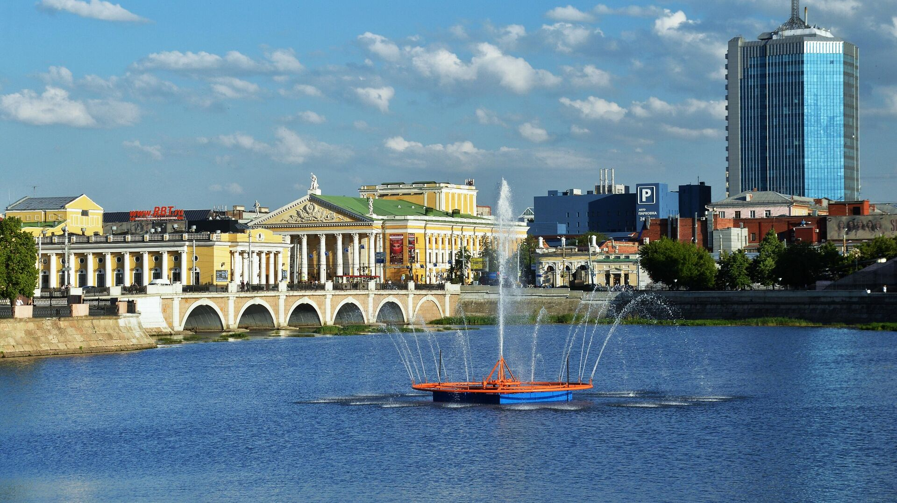

Челябинская область богата историей, насчитывающей множество важных событий и значимых моментов. Основанный в 1736 году, Челябинск развивался как промышленный и культурный центр.
В период индустриализации Челябинск стал крупным металлургическим центром, внесшим значительный вклад в экономику страны. В годы Великой Отечественной войны, здесь работали заводы, производившие военное оборудование, что сыграло ключевую роль в победе над фашистскими захватчиками.
Сегодня Челябинская область привлекает туристов своей уникальной природой, историческими памятниками и современной инфраструктурой.
